1. Peristaltik og transport
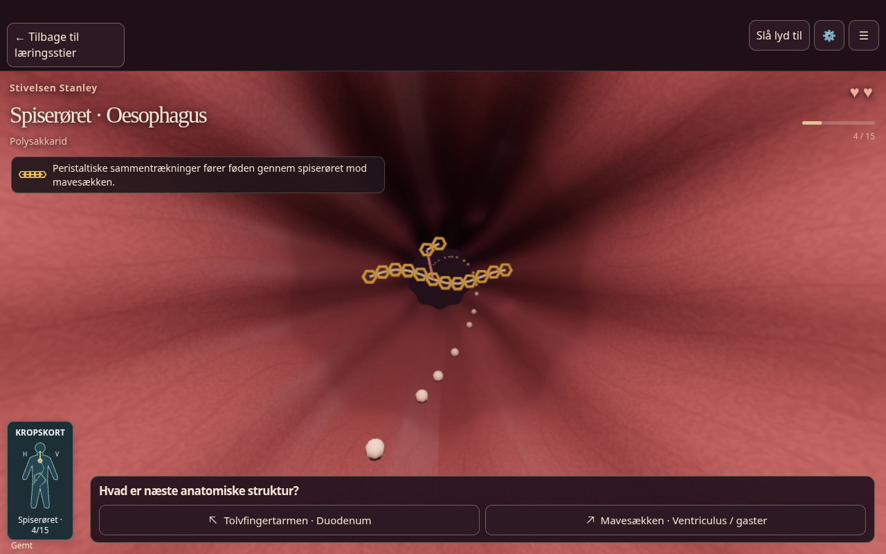
Peristaltisk kontraktion bag bolus i oesophagus.1280 × 800 · scene 2.22 s · 15,372 trekanter · 29 tegnekald01-oesophagus-desktop-a.png
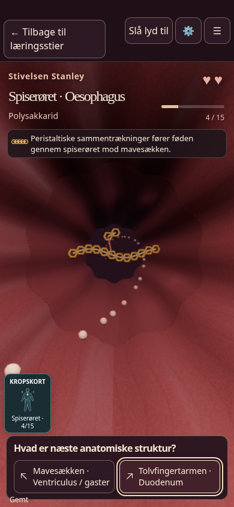
Peristaltisk kontraktion bag bolus i oesophagus.390 × 844 · scene 2.20 s · 15,372 trekanter · 29 tegnekald01-oesophagus-mobil-a.png
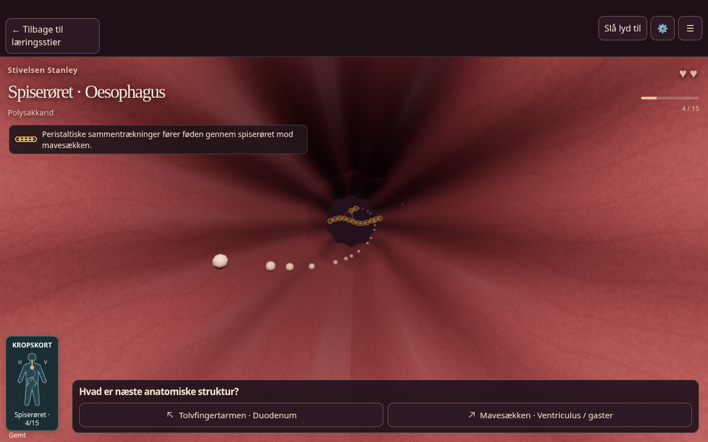
Kontraktionen er rykket frem; kameraet er uændret.1280 × 800 · scene 5.23 s · 15,372 trekanter · 29 tegnekald02-oesophagus-desktop-b.png
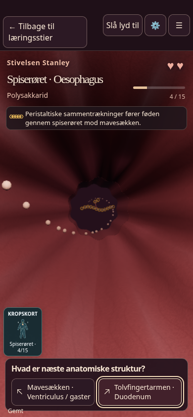
Kontraktionen er rykket frem; kameraet er uændret.390 × 844 · scene 5.02 s · 15,372 trekanter · 29 tegnekald02-oesophagus-mobil-b.png
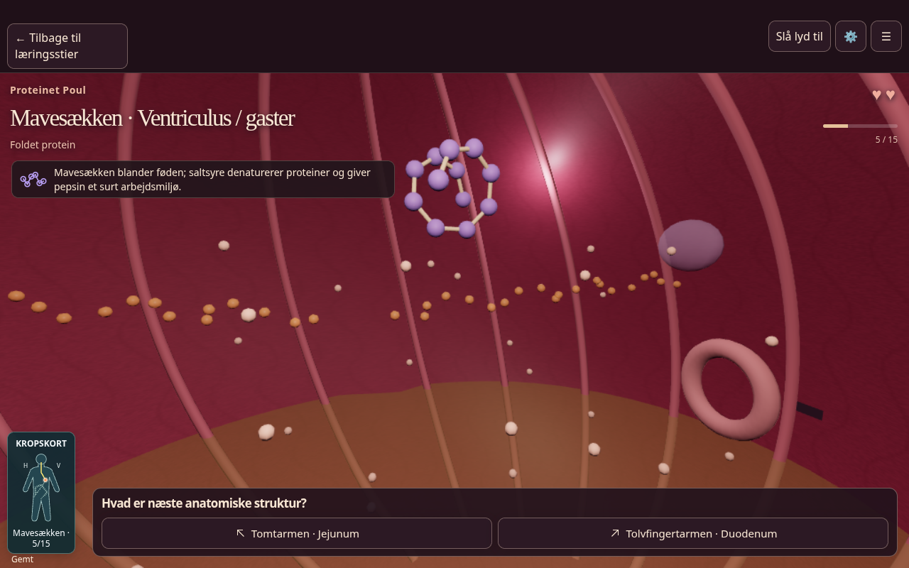
Lokal gastrisk bevægelse med antral transport og blanding.1280 × 800 · scene 8.13 s · 27,108 trekanter · 47 tegnekald03-ventrikel-desktop-a.png
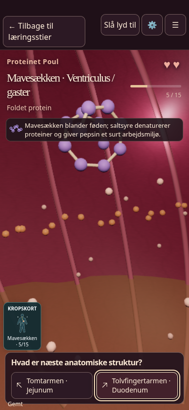
Lokal gastrisk bevægelse med antral transport og blanding.390 × 844 · scene 8.17 s · 26,252 trekanter · 45 tegnekald03-ventrikel-mobil-a.png
Senere fase med distale kontraktioner og retropulsion.1280 × 800 · scene 14.12 s · 27,108 trekanter · 47 tegnekald04-ventrikel-desktop-b.png
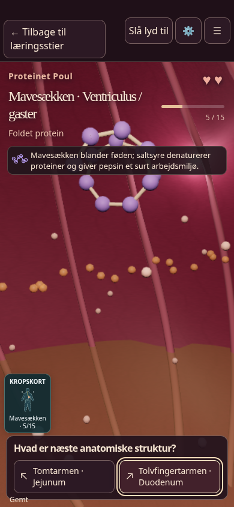
Senere fase med distale kontraktioner og retropulsion.390 × 844 · scene 14.27 s · 26,252 trekanter · 45 tegnekald04-ventrikel-mobil-b.png
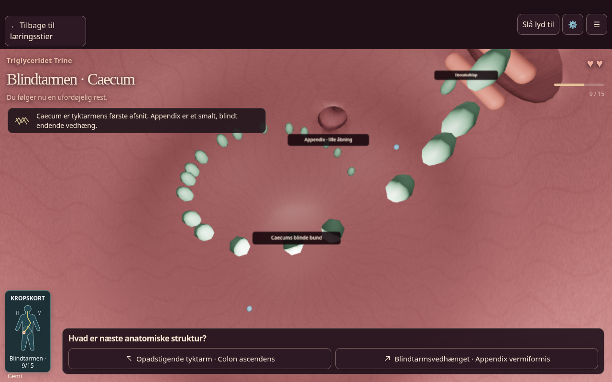
Kontrolleret passage gennem ileocøkalklappen til caecum.1280 × 800 · scene 1.87 s · 21,574 trekanter · 12 tegnekald24-ileocoekalovergang-desktop.png
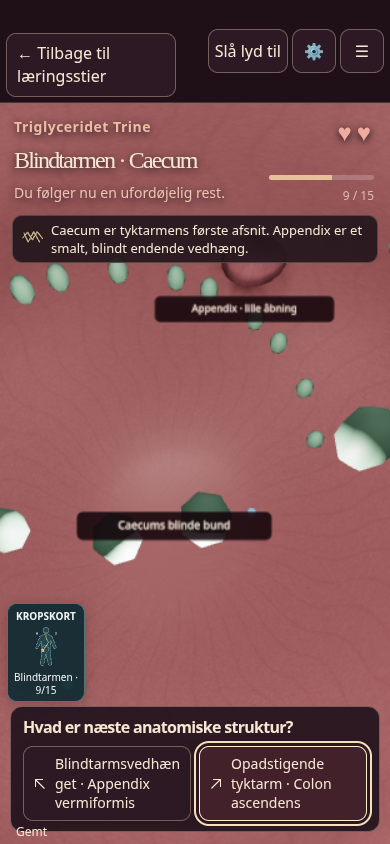
Kontrolleret passage gennem ileocøkalklappen til caecum.390 × 844 · scene 1.97 s · 20,004 trekanter · 6 tegnekald24-ileocoekalovergang-mobil.png
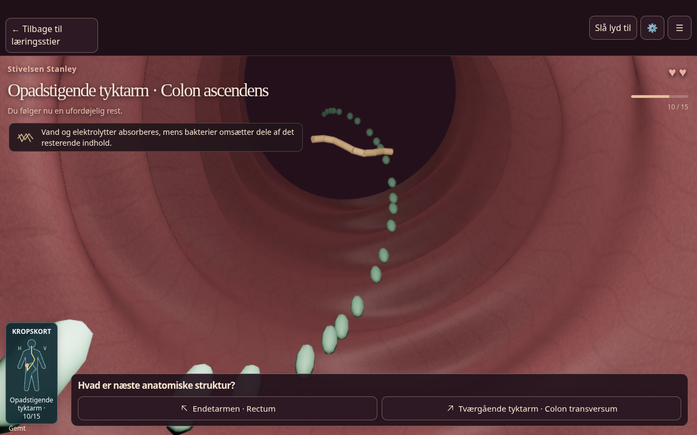
Lokale haustrale kontraktioner med en langsommere fremaddrivende bølge.1280 × 800 · scene 3.05 s · 14,256 trekanter · 10 tegnekald25-colon-haustral-desktop-a.png
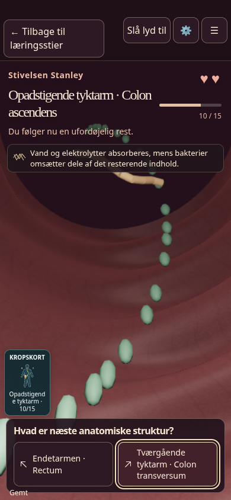
Lokale haustrale kontraktioner med en langsommere fremaddrivende bølge.390 × 844 · scene 3.17 s · 14,256 trekanter · 10 tegnekald25-colon-haustral-mobil-a.png
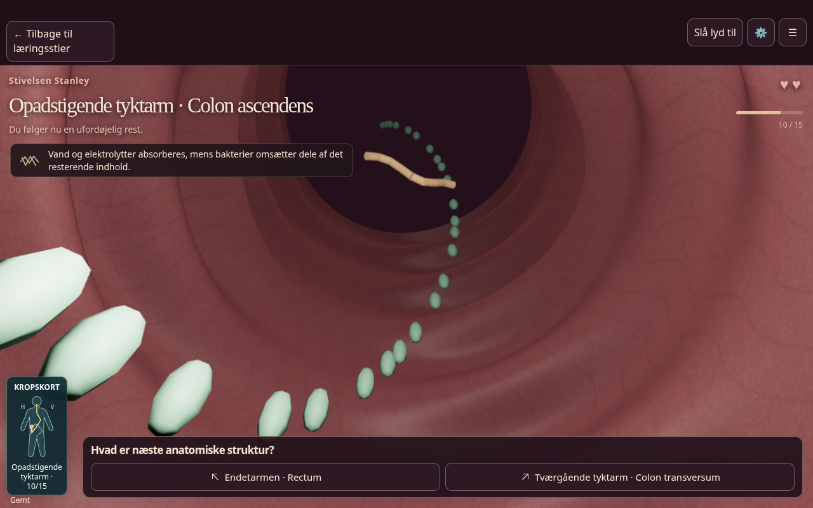
Senere fase i colon; kameraet peger fortsat langs lumen.1280 × 800 · scene 8.43 s · 14,832 trekanter · 12 tegnekald26-colon-haustral-desktop-b.png
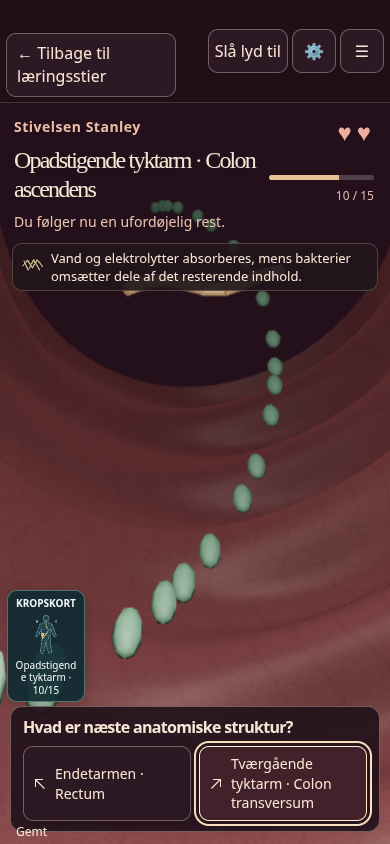
Senere fase i colon; kameraet peger fortsat langs lumen.390 × 844 · scene 8.22 s · 14,544 trekanter · 11 tegnekald26-colon-haustral-mobil-b.png
2. Stivelse
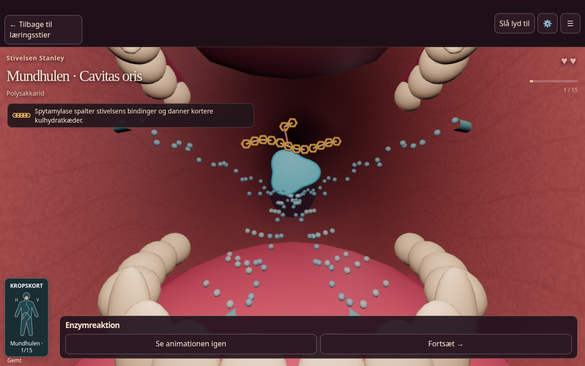
Spytamylase nærmer sig stivelseskæden; bindinger fremhæves.1280 × 800 · scene 3.07 s · 53,024 trekanter · 136 tegnekald05-stivelse-desktop-a.png
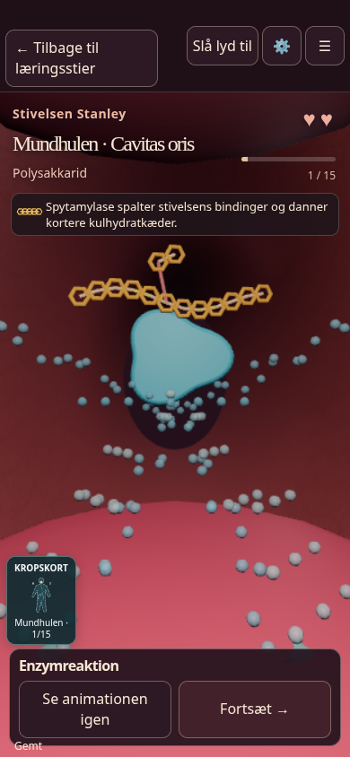
Spytamylase nærmer sig stivelseskæden; bindinger fremhæves.390 × 844 · scene 2.57 s · 29,032 trekanter · 60 tegnekald05-stivelse-mobil-a.png
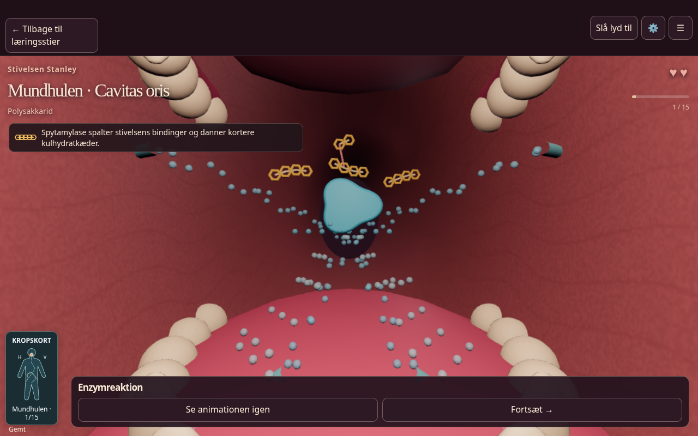
Spaltede bindinger og kortere sammenhængende kulhydratfragmenter.1280 × 800 · scene 5.97 s · 51,616 trekanter · 132 tegnekald06-stivelse-desktop-b.png
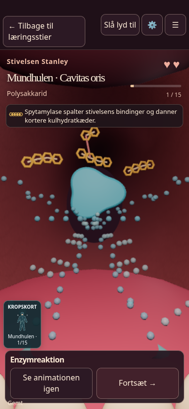
Spaltede bindinger og kortere sammenhængende kulhydratfragmenter.390 × 844 · scene 5.72 s · 29,680 trekanter · 60 tegnekald06-stivelse-mobil-b.png
3. Galde, lipase og miceller
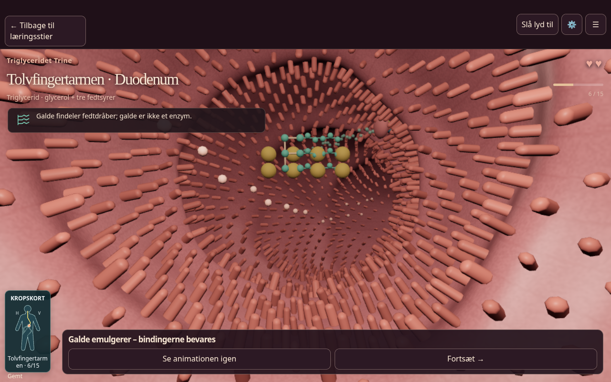
Galde emulgerer fedtdråber uden at klippe esterbindinger.1280 × 800 · scene 2.68 s · 205,824 trekanter · 98 tegnekald07-emulgering-desktop.png
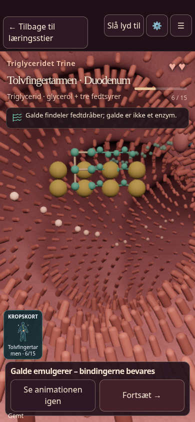
Galde emulgerer fedtdråber uden at klippe esterbindinger.390 × 844 · scene 2.53 s · 195,684 trekanter · 97 tegnekald07-emulgering-mobil.png
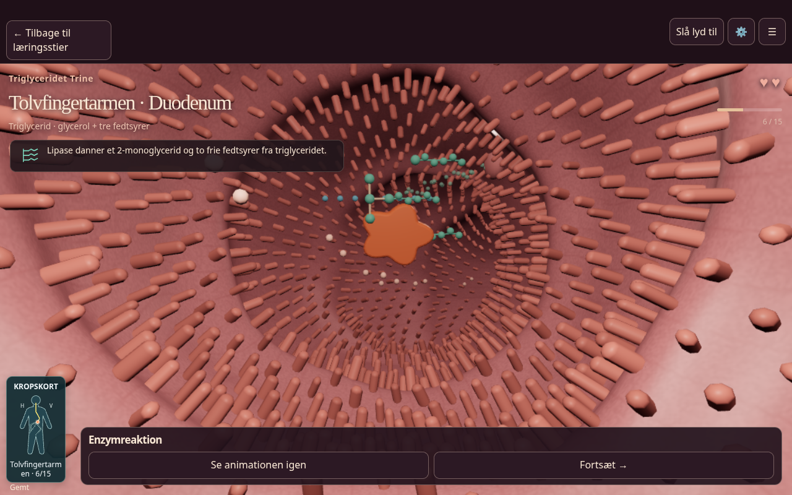
Lipase spalter de ydre esterbindinger: to frie fedtsyrer og et 2-monoglycerid.1280 × 800 · scene 5.83 s · 206,788 trekanter · 97 tegnekald08-lipase-desktop.png
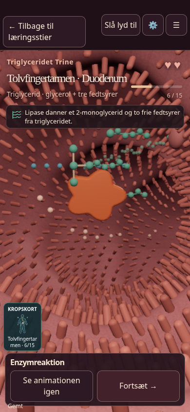
Lipase spalter de ydre esterbindinger: to frie fedtsyrer og et 2-monoglycerid.390 × 844 · scene 5.80 s · 196,648 trekanter · 96 tegnekald08-lipase-mobil.png
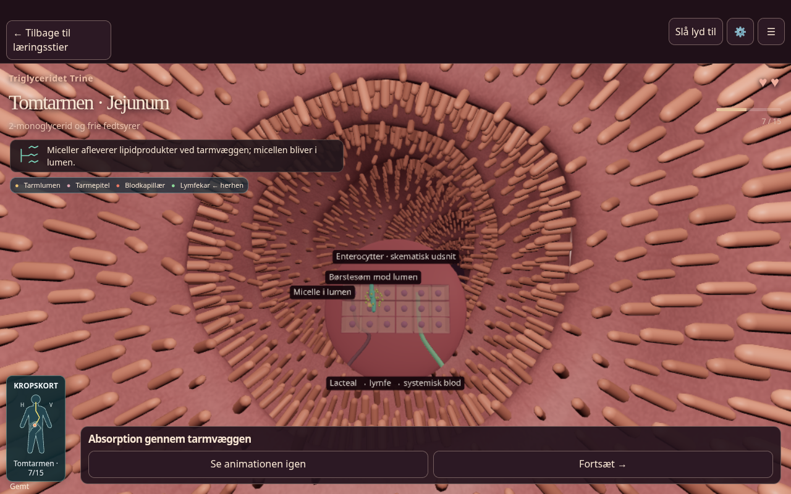
Micellen leverer lipidprodukter ved børstesømmen og bliver i lumen.1280 × 800 · scene 2.12 s · 248,260 trekanter · 31 tegnekald · micelle-delivery09-micelle-desktop.png
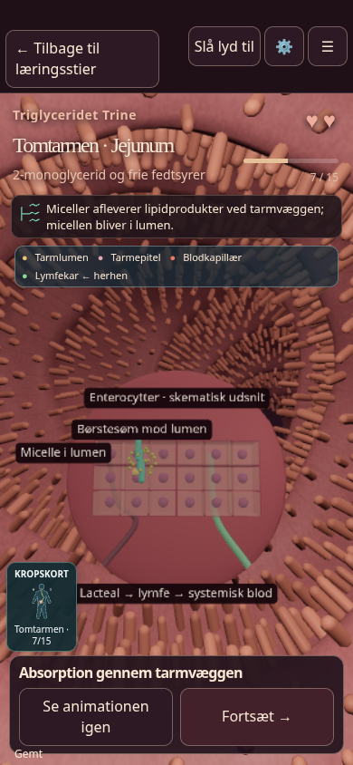
Micellen leverer lipidprodukter ved børstesømmen og bliver i lumen.390 × 844 · scene 2.02 s · 248,260 trekanter · 31 tegnekald · micelle-delivery09-micelle-mobil.png
Triglycerider gendannes inde i enterocytterne før chylomikrontransport.1280 × 800 · scene 1.54 s · 247,394 trekanter · 29 tegnekald · reesterification16-reesterificering-desktop.png
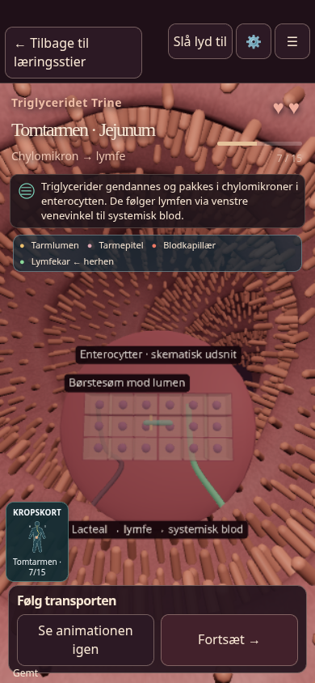
Triglycerider gendannes inde i enterocytterne før chylomikrontransport.390 × 844 · scene 1.52 s · 247,394 trekanter · 29 tegnekald · reesterification16-reesterificering-mobil.png
4. Protein og intracellulær hydrolyse
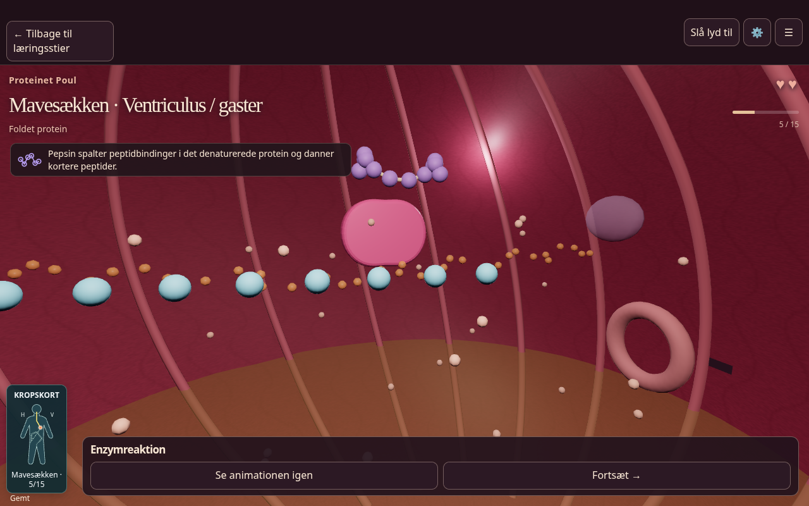
Proteinet udfoldes i det sure ventrikelmiljø.1280 × 800 · scene 1.30 s · 30,432 trekanter · 56 tegnekald10-protein-desktop-a.png
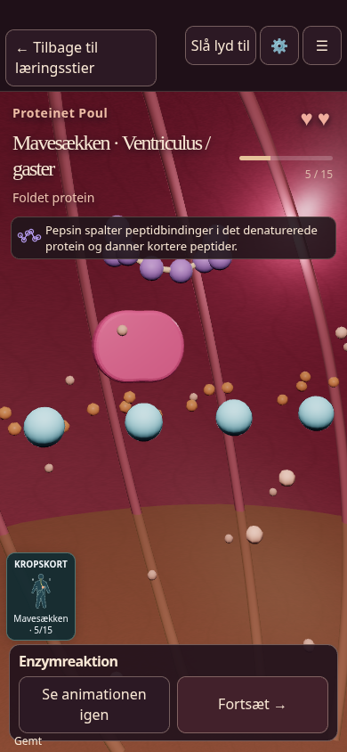
Proteinet udfoldes i det sure ventrikelmiljø.390 × 844 · scene 1.20 s · 28,424 trekanter · 50 tegnekald10-protein-mobil-a.png
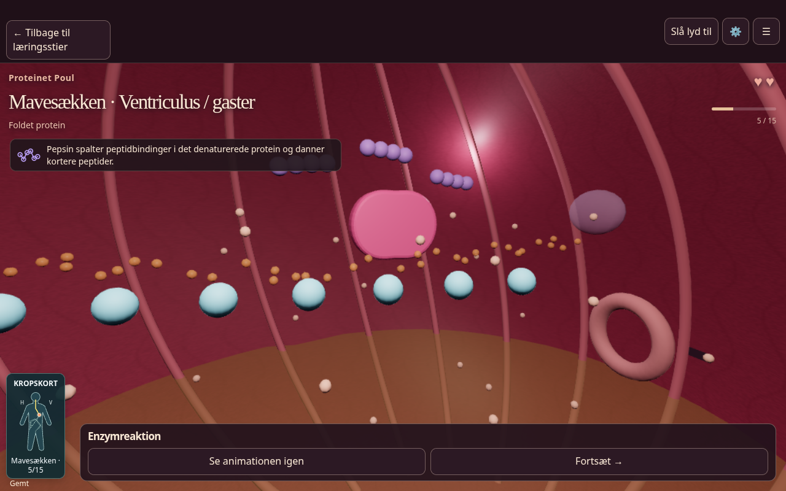
Pepsin har spaltet proteinet til kortere peptidfragmenter.1280 × 800 · scene 5.55 s · 30,088 trekanter · 53 tegnekald11-protein-desktop-b.png
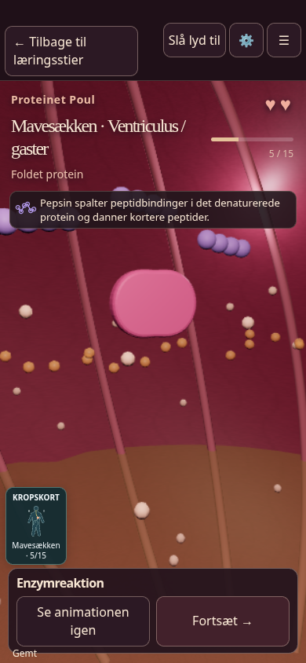
Pepsin har spaltet proteinet til kortere peptidfragmenter.390 × 844 · scene 5.58 s · 27,216 trekanter · 44 tegnekald11-protein-mobil-b.png
Aminosyrer samt di- og tripeptider bevæger sig ind i enterocytterne.1280 × 800 · scene 2.23 s · 253,862 trekanter · 40 tegnekald · aa-and-peptide-uptake12-peptidoptagelse-desktop-a.png
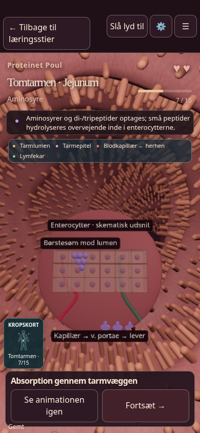
Aminosyrer samt di- og tripeptider bevæger sig ind i enterocytterne.390 × 844 · scene 2.23 s · 253,862 trekanter · 40 tegnekald · aa-and-peptide-uptake12-peptidoptagelse-mobil-a.png
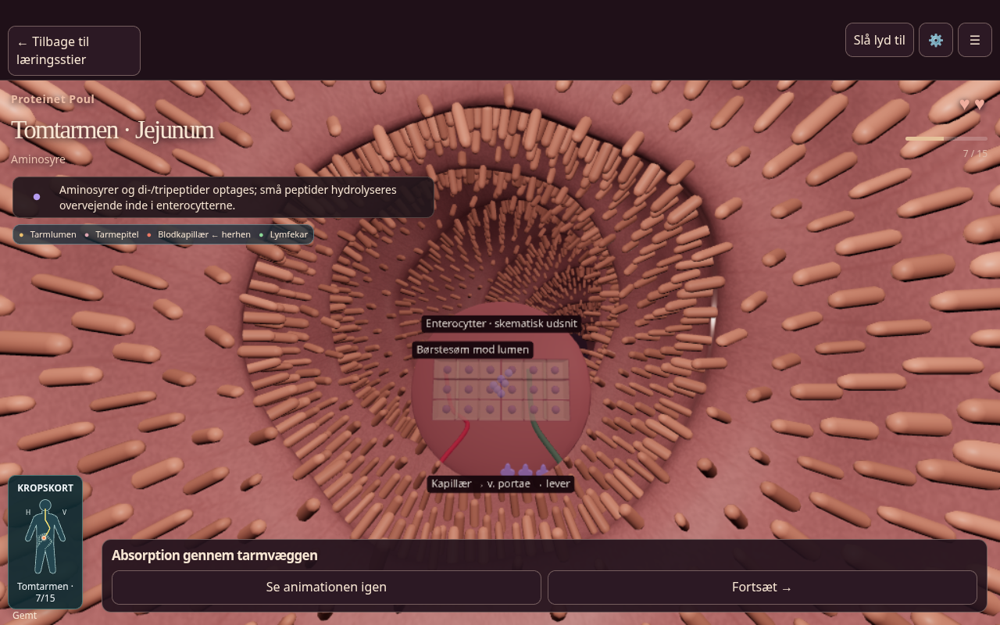
De optagne små peptider hydrolyseres inde i epitelet.1280 × 800 · scene 5.93 s · 253,802 trekanter · 37 tegnekald · intracellular-peptide-hydrolysis13-peptidoptagelse-desktop-b.png
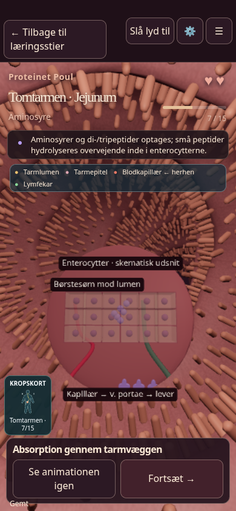
De optagne små peptider hydrolyseres inde i epitelet.390 × 844 · scene 5.52 s · 253,802 trekanter · 37 tegnekald · intracellular-peptide-hydrolysis13-peptidoptagelse-mobil-b.png
5. Epitel, blod og lymfe
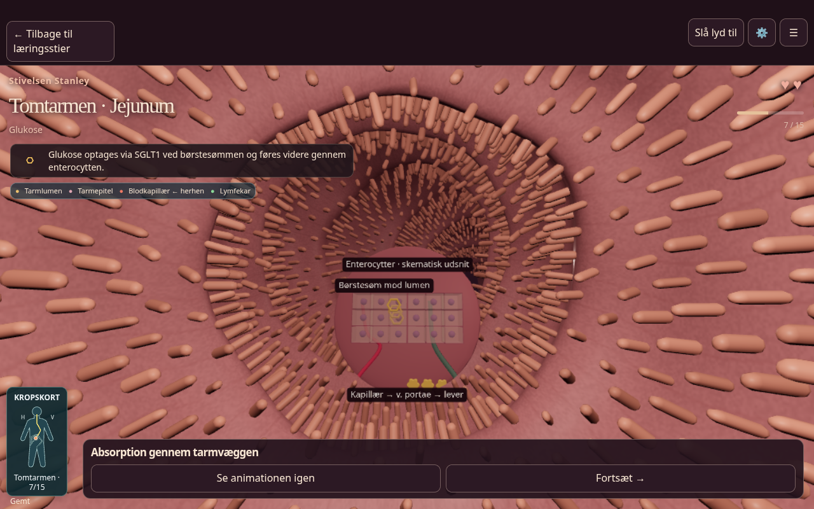
Glukose passerer børstesømmen og enterocytterne i det lokale vævsudsnit.1280 × 800 · scene 3.62 s · 253,502 trekanter · 34 tegnekald · glucose-sglt1-uptake14-glukoseoptagelse-desktop.png
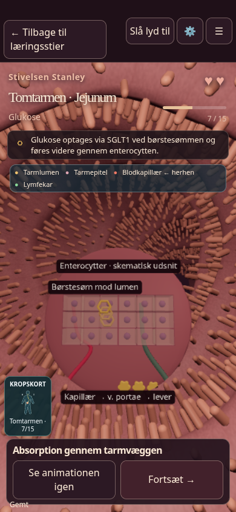
Glukose passerer børstesømmen og enterocytterne i det lokale vævsudsnit.390 × 844 · scene 3.55 s · 253,502 trekanter · 34 tegnekald · glucose-sglt1-uptake14-glukoseoptagelse-mobil.png
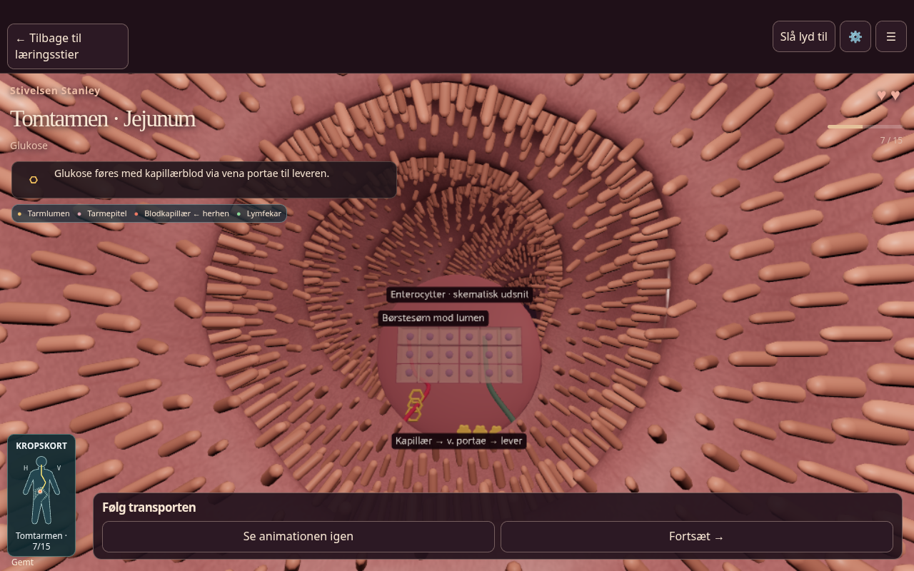
Glukose følger kapillærblod og portal transport mod leveren.1280 × 800 · scene 6.22 s · 253,502 trekanter · 34 tegnekald · portal-to-liver15-blodtransport-desktop.png
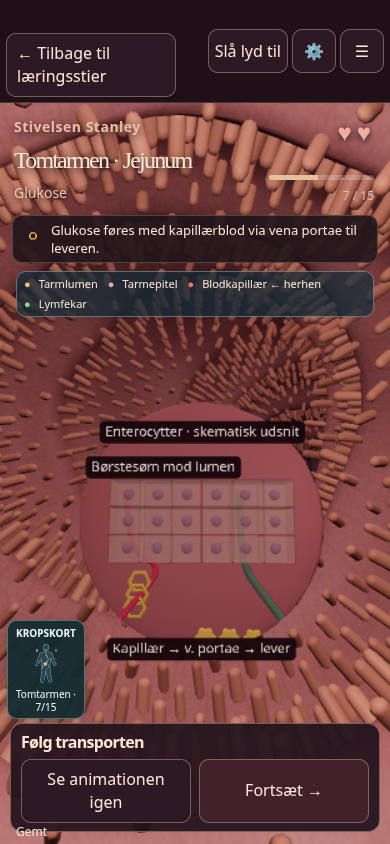
Glukose følger kapillærblod og portal transport mod leveren.390 × 844 · scene 6.10 s · 253,502 trekanter · 34 tegnekald · portal-to-liver15-blodtransport-mobil.png
Chylomikronerne passerer til lactealet og følger lymfevejen.1280 × 800 · scene 5.60 s · 248,234 trekanter · 35 tegnekald · lacteal-transport17-lymfetransport-desktop.png
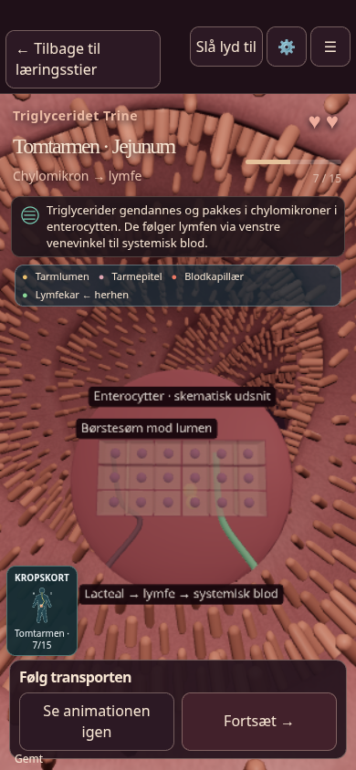
Chylomikronerne passerer til lactealet og følger lymfevejen.390 × 844 · scene 5.82 s · 248,234 trekanter · 35 tegnekald · lacteal-transport17-lymfetransport-mobil.png
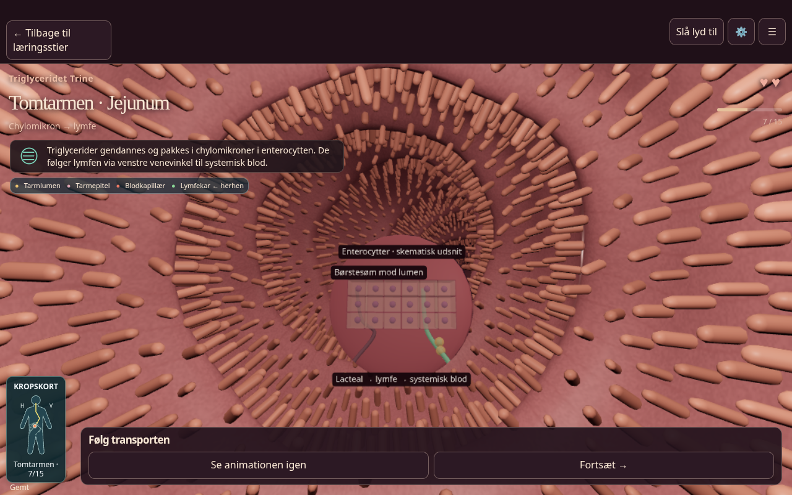
Lymfen føres til ductus thoracicus og venstre venevinkel, videre til systemisk blod.1280 × 800 · scene 10.22 s · 248,234 trekanter · 35 tegnekald · lymph-to-systemic-blood18-lymfe-til-blod-desktop.png
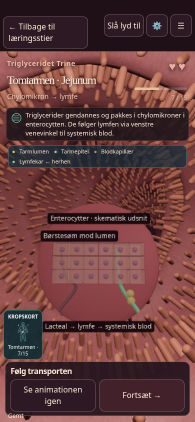
Lymfen føres til ductus thoracicus og venstre venevinkel, videre til systemisk blod.390 × 844 · scene 10.10 s · 248,234 trekanter · 35 tegnekald · lymph-to-systemic-blood18-lymfe-til-blod-mobil.png
6. Toiletfinale og tre afslutninger
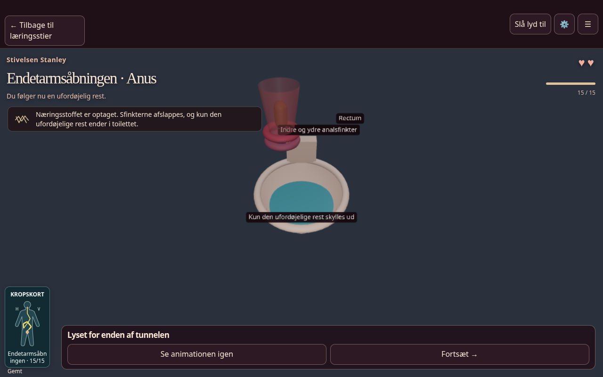
Rectum og begge analsfinktere før den ufordøjelige rest passerer.1280 × 800 · scene 1.63 s · 2,790 trekanter · 13 tegnekald19-finalen-desktop-a.png
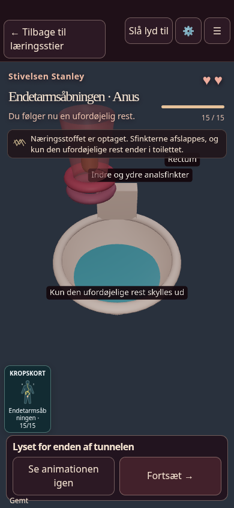
Rectum og begge analsfinktere før den ufordøjelige rest passerer.390 × 844 · scene 1.68 s · 2,790 trekanter · 13 tegnekald19-finalen-mobil-a.png
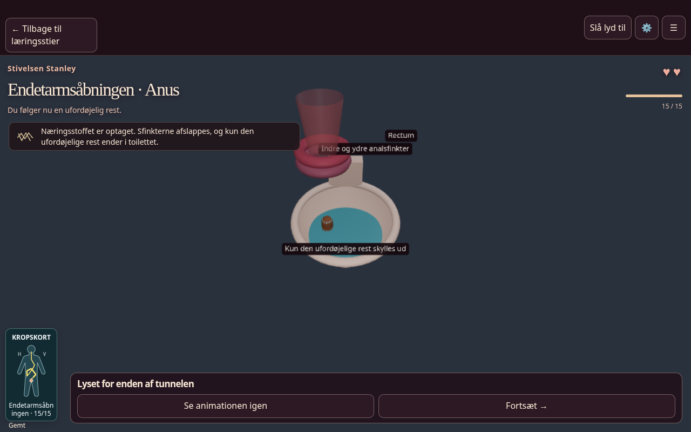
Resten rammer toiletvandet oppefra; næringsstoffet er allerede absorberet.1280 × 800 · scene 5.00 s · 3,862 trekanter · 16 tegnekald20-finalen-desktop-b.png
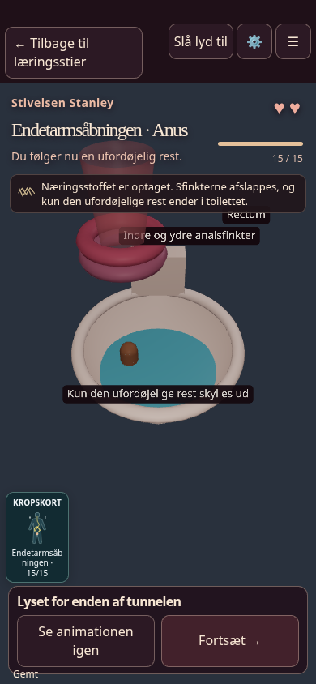
Resten rammer toiletvandet oppefra; næringsstoffet er allerede absorberet.390 × 844 · scene 4.90 s · 3,542 trekanter · 15 tegnekald20-finalen-mobil-b.png
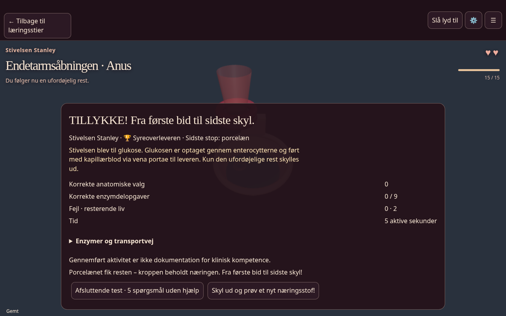
Stanleys afslutning: glukose til portalblod og lever.1280 × 800 · scene 5.22 s · 4,182 trekanter · 17 tegnekald21-slutskaerm-stanley-desktop.png
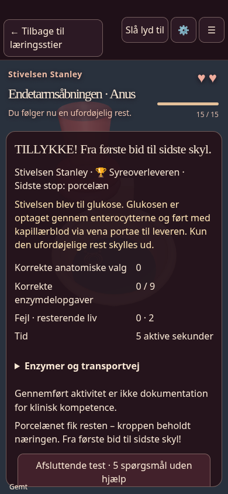
Stanleys afslutning: glukose til portalblod og lever.390 × 844 · scene 5.13 s · 3,862 trekanter · 16 tegnekald21-slutskaerm-stanley-mobil.png
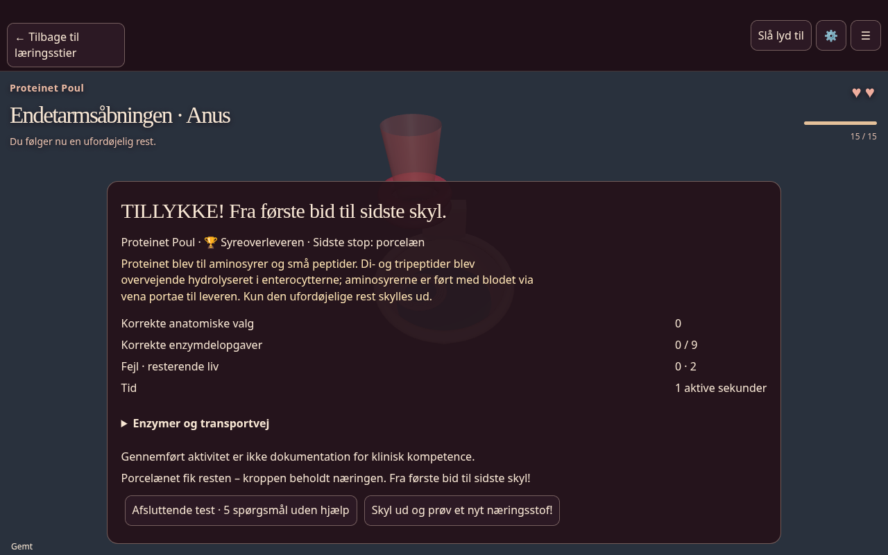
Pouls afslutning: optagelse af aminosyrer/små peptider og portal transport.1280 × 800 · scene 6.25 s · 4,316 trekanter · 14 tegnekald22-slutskaerm-poul-desktop.png
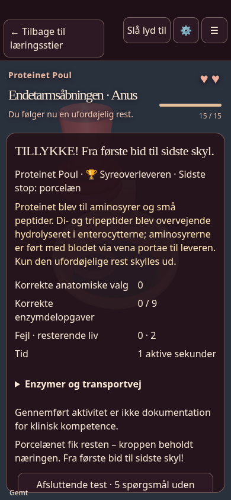
Pouls afslutning: optagelse af aminosyrer/små peptider og portal transport.390 × 844 · scene 6.27 s · 3,884 trekanter · 13 tegnekald22-slutskaerm-poul-mobil.png
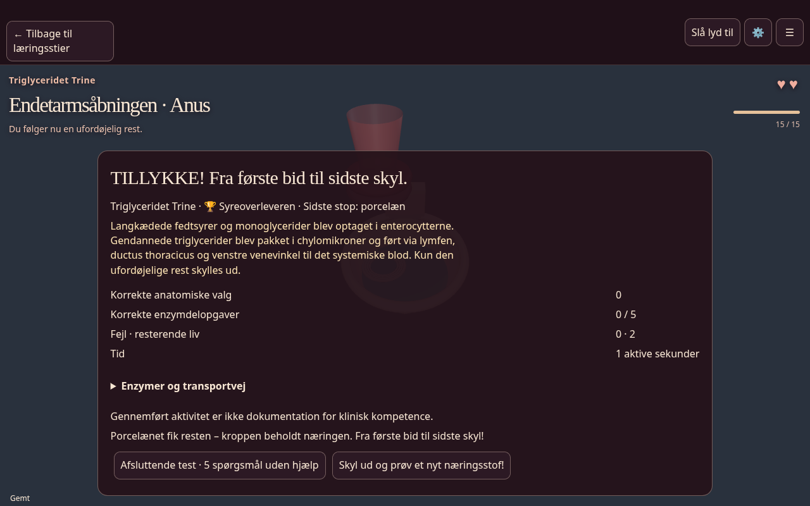
Trines afslutning: chylomikroner via lymfe til systemisk blod.1280 × 800 · scene 6.20 s · 4,316 trekanter · 14 tegnekald22-slutskaerm-trine-desktop.png
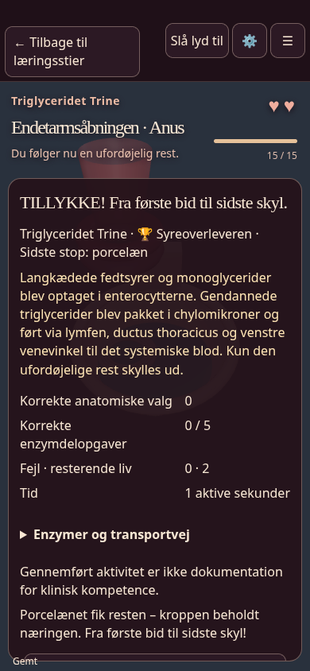
Trines afslutning: chylomikroner via lymfe til systemisk blod.390 × 844 · scene 6.18 s · 4,316 trekanter · 14 tegnekald22-slutskaerm-trine-mobil.png
7. Kort portrait og landskab
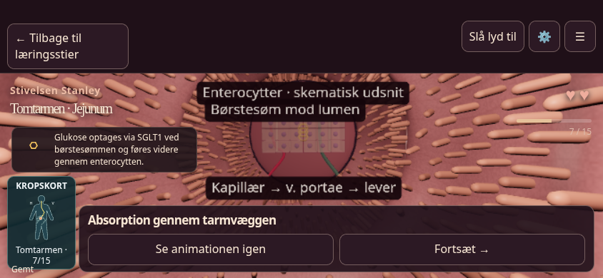
Epiteludsnittet på kort skærm med kompakt information og frie labels.844 × 390 · scene 5.58 s · 253,502 trekanter · 34 tegnekald · glucose-sglt1-uptake30-epitel-landskab.png
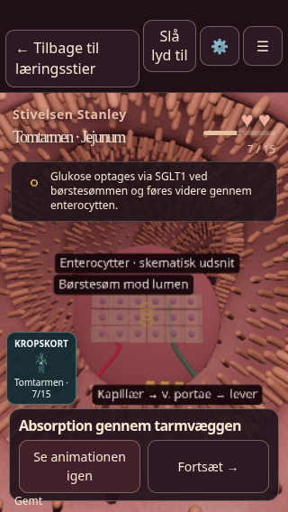
Epiteludsnittet på kort skærm med kompakt information og frie labels.320 × 568 · scene 5.57 s · 253,502 trekanter · 34 tegnekald · glucose-sglt1-uptake30-epitel-lille-portrait.png
Lymfekar og transportvej på lille eller roteret skærm.844 × 390 · scene 9.32 s · 248,234 trekanter · 35 tegnekald · lymph-to-systemic-blood31-lymfe-landskab.png
Lymfekar og transportvej på lille eller roteret skærm.320 × 568 · scene 9.26 s · 248,234 trekanter · 35 tegnekald · lymph-to-systemic-blood31-lymfe-lille-portrait.png
Toiletfinalen med kamera over vandet og læsbare kontroller på kort skærm.844 × 390 · scene 5.63 s · 4,322 trekanter · 17 tegnekald32-finale-landskab.png
Toiletfinalen med kamera over vandet og læsbare kontroller på kort skærm.320 × 568 · scene 5.65 s · 4,322 trekanter · 17 tegnekald32-finale-lille-portrait.png
8. Faktiske animationsoptagelser
Optaget direkte fra Chromiums billedstrøm. Billedtidsstempler bevares; der indsættes ingen syntetiske mellemframes. Den lave softwarehastighed og selve optagelsen kan give ujævne bevægelser.
peristaltik-oesophagus.mp434 optagne browserframes · 8.10 sÅbn MP4
chylomikroner-lymfe.mp419 optagne browserframes · 10.74 sÅbn MP4
toiletfinale.mp4117 optagne browserframes · 5.95 sÅbn MP4
9. Sammenlignelige B.1/C-stillbilleder
Fast kamera, DPR 1, renderfaktor 0,8, bevægelse fra i denne særskilte billedkontrol. Måleruns ovenfor bruger bevægelse til.

before-final-jejunum-desktop.png
after-final-jejunum-desktop.png
before-final-jejunum-mobile.png
after-final-jejunum-mobile.png
before-transport-final-jejunum-desktop.png
after-transport-final-jejunum-desktop.png
before-transport-final-jejunum-mobile.png
after-transport-final-jejunum-mobile.png
Vævsudsnittet og karfortsættelserne er skematiske undervisningsmodeller i den eksisterende kameraskala. Alle 3.200 jejunale villi findes stadig; det lokale udsnit åbner kun væggen for at vise optagelsen.